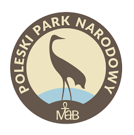

Poleski Park Narodowy
Został założony w roku 1990 i obejmuje swoją ochroną 97,62 km². Znajduje się we wschodniej części Polski, w województwie lubelskim, w polskiej części Polesia, w obrębie Równiny Łęczyńsko-Włodawskiej. Symbolem parku jest żuraw. Obszar parku jest zdecydowanie równiny oraz podmokły. Chroni liczne bagna, jeziora krasowe, stawy, torfowiska oraz naturalne kompleksy leśne, w których znajdziecie bogactwo flory oraz fauny. Na terenie parku procesy formowania się dolin rzecznych praktycznie jeszcze się nie zaznaczyły. Można tutaj podziwiać namiastkę tundry, a Poleski Park Narodowy jest jednym z najbogatszych w ptactwo obszarów w kraju. Przyjazd w jego progi będzie nie lada gratką nie tylko dla ornitologów.